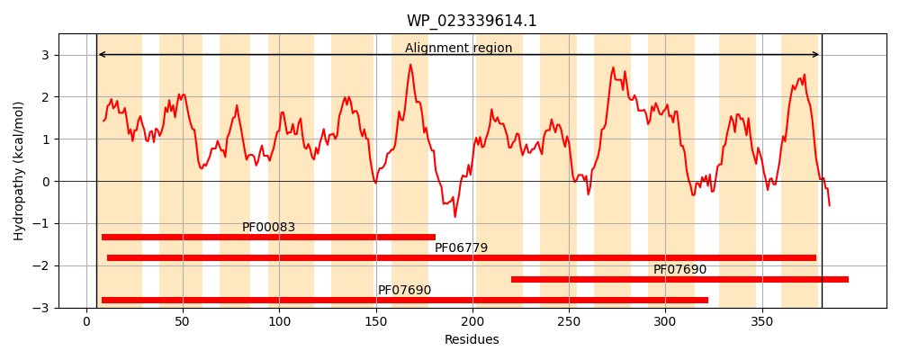
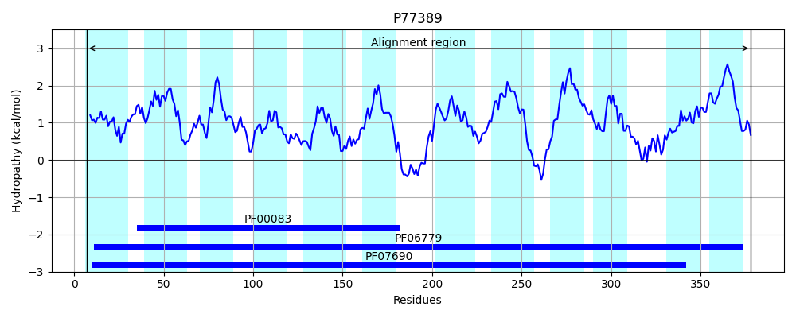
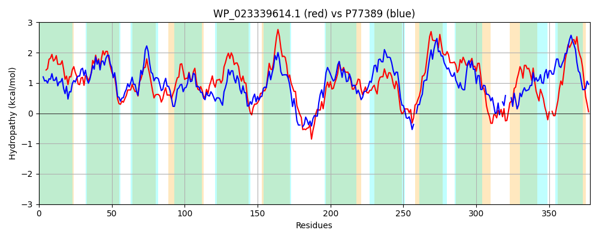

Hit Accession: P77389
Hit TCID: 2.A.1.2.65
Hit Description: gnl|BL_ORD_ID|11510 gnl|TC-DB|P77389|2.A.1.2.65 Inner membrane transport protein ydhP OS=Escherichia coli (strain K12) GN=ydhP PE=1 SV=1
Mach Len: 378
e:0.000000
Query TMS Count : 12
Hit TMS Count: 12
TMS-Overlap Score: 11.750000
Predicted Substrates:None
BLAST Alignment:
Score: 736 , Bit scores: 288 bits, E-value: 1.5e-94, Alignment length: 378, Percentage identity: 43
Query: 5 LFALTIGAFAIGTTEFVIVGLVPTIAQQLSISLPSAGLLVSIYALGVAIGAPVLTALTGRMPRKQLLLALMVLFTAGNVLAWQAPGYETLILARLLTGLAHGVFFSIGSTIATSLVAKEKAASAIAIMFGGLTVALVTGVPFGTFIGQHFGWRETFLAVSILGVIALISSLLLVPNNIPGRASASLRDQMKVLTHPRLLMIYAITALGYGGVFTAFTFLAPMMQELAGFSPSAVSWILLGYGVSVAIGNMWGGKLADKHGAVSALKFIFAALVVLLLVFQLTASIHYAALATVLVMGIFAFGNVPGLQVYVVQKAEQYTPGAVDVASGLNIAAFNIGIALGSIVGGQTVER-YGLAQTPWIGAVIVLVALLLVMLSGR 381
L AL IGAF IGTTEF +GL+P IA+ + +S+P+AG+L+S YA+GV +GAP++T L R+ L+ LM +FT GNVL+ AP Y TL+L+R+LT L HG FF +GS +A S+V K K ASA+A MF GLT+A + GVP T++G+ GWR +FLA + LGVI+++S +P G A ++ ++ VL P++L T LG G +FT +T+++P++Q + +P V+ +L+ GV +IGN GGKLAD+ LK L+V++L A + A +++V G F VP LQ+ V++ A + PG ++S +NI AFN+G ALG+ GG + G + P +GA++ +ALLLV +S R
Sbjct: 7 LLALAIGAFGIGTTEFSPMGLLPVIARGVDVSIPAAGMLISAYAVGVMVGAPLMTLLLSHRARRSALIFLMAIFTLGNVLSAIAPDYMTLMLSRILTSLNHGAFFGLGSVVAASVVPKHKQASAVATMFMGLTLANIGGVPAATWLGETIGWRMSFLATAGLGVISMVSLFFSLPKGGAG-ARPEVKKELAVLMRPQVLSALLTTVLGAGAMFTLYTYISPVLQSITHATPVFVTAMLVLIGVGFSIGNYLGGKLADR-SVNGTLKGFLLLLMVIMLAIPFLARNEFGAAISMVVWGAATFAVVPPLQMRVMRVASE-APG---LSSSVNIGAFNLGNALGAAAGGAVISAGLGYSFVPVMGAIVAGLALLLVFMSAR 378 | Protein Hydropathy Plots: |
|---|
|  |  |
Pairwise Alignment-Hydropathy Plot:
|
|---|
|  |